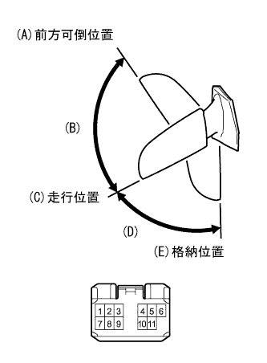

Outer Rear View Mirror Assembly LH Inspection |
| 1. Inspect Outer Rear View Mirror Assembly LH |
 |
Electric Retract Operation Inspection
Check the operation when battery voltage is applied between each connector terminal.
| Connection | Operating Direction |
|---|---|
| Battery positive (+) - 11 (MR) Battery negative (-) - 10 (MF) | Retract direction (stops at retracted position) |
| Battery positive (+) - 10 (MF) Battery negative (-) - 11 (MR) | Does not operate |
| Connection | Operating Direction |
|---|---|
| Battery positive (+) - 11 (MR) Battery negative (-) - 10 (MF) | Retract direction (stops at retracted position) |
| Battery positive (+) - 10 (MF) Battery negative (-) - 11 (MR) | Forward fold direction (stops at forward folded position) |
| Connection | Operating Direction |
|---|---|
| Battery positive (+) - 11 (MR) Battery negative (-) - 10 (MF) | Retract direction (stops at retracted position) |
| Battery positive (+) - 10 (MF) Battery negative (-) - 11 (MR) | Does not operate |
| Connection | Operating Direction |
|---|---|
| Battery positive (+) - 11 (MR) Battery negative (-) - 10 (MF) | Retract direction (stops at retracted position) |
| Battery positive (+) - 10 (MF) Battery negative (-) - 11 (MR) | Return direction (stops at driving position) |
| Connection | Operating Direction |
|---|---|
| Battery positive (+) - 11 (MR) Battery negative (-) - 10 (MF) | Does not operate |
| Battery positive (+) - 10 (MF) Battery negative (-) - 11 (MR) | Return direction (stops at driving position) |
Mirror Heater Inspection (w/ Cold Area Specification)
Using SST (Toyota electrical tester), measure the resistance of the mirror heater.
| Tester Connection (Terminal Symbol) | Condition | Standard |
|---|---|---|
| 7(H+) - 8(H-) | 25°C | 7.6 to 11.4Ω |
Mirror Surface Position Operation Inspection
Check the operation when battery voltage is applied between each connector terminal.
| Connection | Operating Direction |
|---|---|
| Battery positive (+) - 6 (MV) Battery negative (-) - 5 (M+) | Up |
| Battery positive (+) - 5 (M+) Battery negative (-) - 6 (MV) | Down |
| Battery positive (+) - 5 (M+) Battery negative (-) - 4 (MH) | Inward |
| Battery positive (+) - 4 (MH) Battery negative (-) - 5 (M+) | Outward |